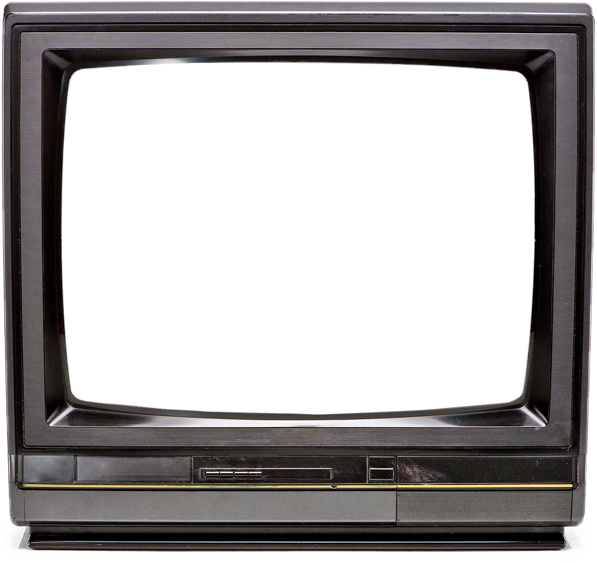
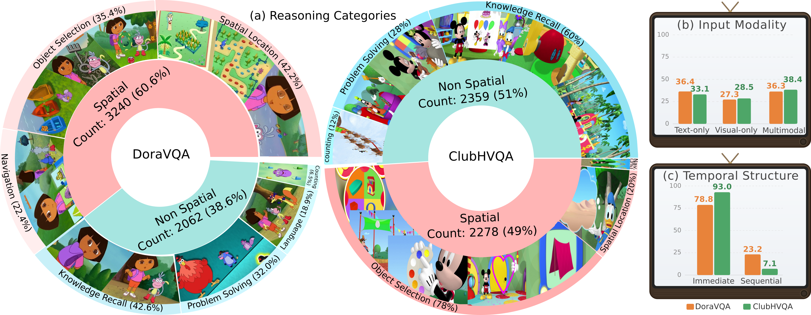
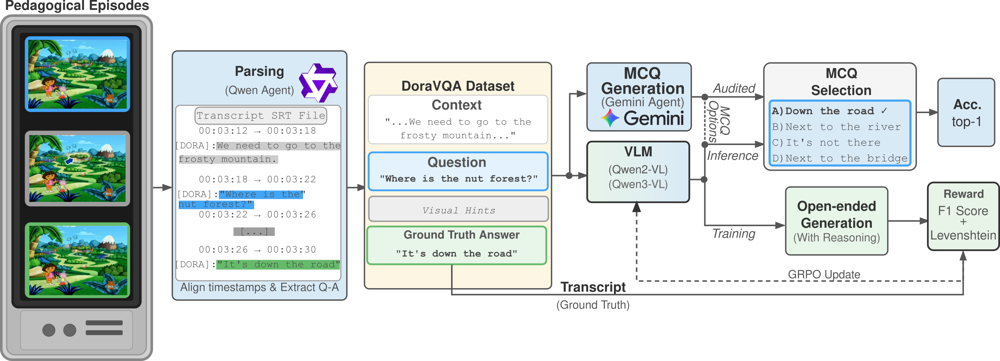

Abstract
State-of-the-art vision-language models (VLMs) score impressively on video benchmarks yet stumble on basic visual reasoning tasks involving spatial relations, navigation, and object selection that a preschooler solves without effort. We hypothesize that the explicit pedagogical structure, specifically the context-question-pause-answer cycles embedded in children's educational video, provides naturally co-aligned reasoning traces: temporally synchronized visual cues, questions, and answers that emerge only from deliberate pedagogical authoring and cannot be practically reconstructed through manual annotation at scale. To test this, we introduce SoSVQA (Structure over Scale Visual Question Answering), a unified benchmark of 10K question-answer pairs automatically extracted from Dora the Explorer (DoraVQA) and Mickey Mouse Clubhouse (ClubHVQA) with precise timestamp alignment, and fine-tune Qwen2-VL and Qwen3-VL using Group Relative Policy Optimization (GRPO) to leverage the clear correctness signals and structured reasoning traces inherent in educational content. Despite training on just 10K QA pairs from 78 hours of children's television, orders of magnitude less data than GPT and Gemini, our approach delivers generalizable performance gains for Qwen-based VLMs, yielding consistent improvements on NExT-QA (+19.7), Video-MME (+10.6), and MotionBench (+4.9), outperforming proprietary systems and demonstrating that content structure can compensate for content scale.
SoSVQA: Structure over Scale VQA Dataset

Dora the Explorer is an educational children's television series that aired from 2000 to 2019, designed to teach preschoolers problem-solving, Spanish vocabulary, and visual reasoning through interactive storytelling. Each episode follows a consistent pedagogical structure: Dora and her companion Boots embark on adventures that require viewers to help solve problems by answering direct questions posed to the camera.
The show employs a deliberate context-question-pause-answer format where questions are explicitly posed ("How do we get to the blue tree?"), followed by a pause that allows processing time while visually emphasizing relevant objects through gestures, zooms, or highlights, before revealing clear answers with verbal explanations. This structure creates a self-contained learning environment analogous to interactive tutoring, with an average of 15-20 explicit visual questions per episode.
Data Collection: Our SoSVQA dataset was collected from publicly available episodes on YouTube.
We do not redistribute video; only timestamps, annotations, and extraction code.
The SoSVQA Dataset

SoSVQA (Structure over Scale Visual Question Answering) is a unified benchmark of 10K question-answer pairs automatically extracted from 78 hours of children's educational television with precise timestamp alignment. It comprises two complementary splits:
- DoraVQA — 5,344 QA pairs from 8 seasons of Dora the Explorer, spanning spatial location (42.2%), object selection (35.4%), navigation (22.4%), counting, problem-solving, and knowledge recall.
- ClubHVQA — 4,637 QA pairs from Mickey Mouse Clubhouse, with a complementary distribution emphasizing object selection (78%), knowledge recall (60%), and spatial location (20%).
Each example preserves the show's pedagogical Context-Question-Pause-Answer structure, providing naturally co-aligned visual cues, questions, and answers as clear correctness signals for training.
Context-Question-Pause-Answer Structure
Structure vs. Scale: NExT-QA Performance
Each Qwen model is shown at its full pre-training scale (1.2T / 1.0T tokens) with a ▲ baseline point and a ★ + GRPO point after fine-tuning on SoSVQA's 10K QA pairs — an imperceptible shift on the x-axis. Competitors are plotted at their own video training scales for comparison.
Performance on
Test Set
| Model | Overall | Spatial | Obj. Sel. & Counting | Navigation | Knowledge |
|---|---|---|---|---|---|
| Gemini-3.0-Flash | 76.10 | 67.83 | 87.10 | 65.38 | 88.52 |
| Gemini-3.0-Flash (low thinking) | 75.84 | 66.81 | 88.17 | 69.23 | 86.89 |
| GPT-4V | 67.79 | 60.34 | 75.27 | 69.23 | 68.85 |
| Gemini-2.5-Pro | 64.41 | 62.62 | 72.83 | 60.78 | 71.93 |
| LLaVA-Video-7B | 55.41 | 54.02 | 62.22 | 66.00 | 67.31 |
| Video-LLaVA-7B | 37.82 | 47.49 | 60.66 | 46.34 | 32.43 |
| InternVideo2.5-8B | 57.68 | 46.55 | 63.04 | 59.62 | 68.85 |
| Qwen2-VL-2B (baseline) | 40.29 | 45.36 | 37.61 | 39.03 | 39.95 |
| Qwen2-VL-2B + GRPO | 48.32 (+8.03) | 58.86 (+13.50) | 44.71 (+7.10) | 44.30 (+5.27) | 45.97 (+6.02) |
| Qwen2-VL-7B (baseline) | 52.21 | 54.14 | 51.45 | 41.97 | 48.77 |
| Qwen2-VL-7B + GRPO | 57.68 (+5.47) | 67.25 (+13.11) | 64.37 (+12.92) | 47.80 (+5.83) | 67.25 (+18.48) |
| Qwen3-VL-8B (baseline) | 55.24 | 57.17 | 53.58 | 48.96 | 50.32 |
| Qwen3-VL-8B + GRPO | 62.98 (+7.74) | 69.65 (+12.48) | 64.59 (+11.01) | 48.33 (-0.63) | 55.12 (+4.80) |
Gray rows indicate proprietary models. Green shows improvement over baseline, red shows degradation.
Cross-Benchmark Transfer Evaluation
| Model | Params | V-MME | NExT-QA | MVBench | MotionBench | TVBench |
|---|---|---|---|---|---|---|
| GPT-4V | ~1.8T | 59.9 | 68.2 | 43.50 | 58.82 | 34.00 |
| Gemini-2.5-Pro | — | 85.2 | 74.6 | — | 66.30 | 46.50 |
| Gemini-3.0-Flash | — | 86.9 | 80.4 | — | 70.40 | 38.25 |
| InternVideo2.5-8B | 8B | 65.4 | 71.5 | 75.7 | 45.56 | 48.80 |
| LLaVA-Video-7B | 7B | 63.3 | 83.2 | 69.7 | 48.29 | 42.30 |
| Video-LLaVA-7B | 7B | 45.3 | 52.1 | 40.95 | 35.72 | 36.30 |
| Qwen2-VL-2B (baseline) | 2B | 50.10 | 52.60 | 58.99 | 47.0 | 39.85 |
| Qwen2-VL-2B + GRPO | 2B | 60.74 (+10.64) | 72.11 (+19.51) | 59.94 (+0.95) | 51.92 (+4.92) | 40.05 (+0.80) |
| Qwen2-VL-7B (baseline) | 7B | 67.50 | 67.0 | 65.49 | 52.0 | 40.75 |
| Qwen2-VL-7B + GRPO | 7B | 69.25 (+1.75) | 81.80 (+14.80) | 64.33 (-1.16) | 54.01 (+2.01) | 40.60 (-0.15) |
| Qwen3-VL-8B (baseline) | 8B | 71.40 | 62.1 | 68.70 | 61.12 | 46.53 |
| Qwen3-VL-8B + GRPO | 8B | 80.00 (+8.60) | 81.80 (+19.70) | 67.59 (-1.11) | 61.03 (-0.09) | 47.48 (+0.95) |
Gray rows indicate proprietary models.
Methodology

The SoSVQA pipeline leverages the Context-Question-Pause-Answer structure of educational videos. We automatically extract and align question-answer pairs from both DoraVQA and ClubHVQA, then fine-tune VLMs using Group Relative Policy Optimization (GRPO) to ground reasoning in structured pedagogical patterns.
Results Visualization
Compare Qwen2-VL + GRPO and Qwen3-VL + GRPO fine-tuned models with their baselines across different reasoning categories.